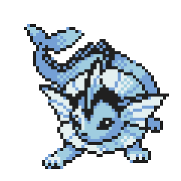
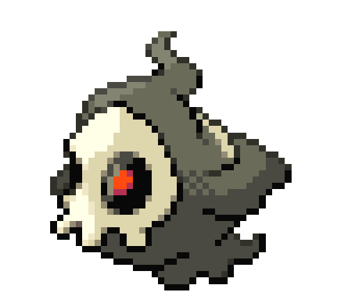
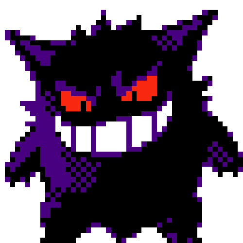
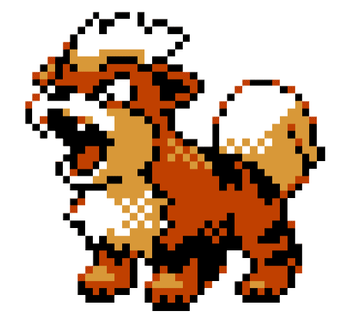

-
Bulbasaur #001

- Grama
- Veneno
Há uma semente de planta em suas costas desde o dia que este Pokémon nasce. A semente cresce lentamente.
-
Ivysaur #002

- Grama
- Veneno
Quando sua planta está pronta para desabrochar, ela emite um aroma adocicado para indicar sua floração.
-
Venusaur #003

- Grama
- Veneno
Há uma grande flor nas costas do Venusaur. Diz-se que a flor adquire cores vivas, caso receba muita nutrição e luz solar. O aroma da flor acalma as emoções das pessoas.
-
Charmander #004

- Fogo
O fogo na ponta da cauda é uma medida de sua vida. Se saudável, sua cauda queima intensamente.
-
Charmeleon #005

- Fogo
Se ficar agitado durante a batalha, lança chamas intensas, incinerando seus arredores.
- Charizard #006

- Fogo
- Voador
Cospe fogo quente o suficiente para derreter pedras. Pode causar incêndios florestais soprando chamas.
-
Squistle #007

- Água
Ela se abriga em sua concha, e depois revida com esguicho de água a cada oportunidade.
- Wartortle #008

- Água
Geralmente esconde-se na água para perseguir presas descuidadas. Para nadar rápido, move os ouvidos para manter o equilíbrio.
- Blastoise #009

- Água
Blastoise é uma grande tartaruga-como Pokémon com algumas características semelhantes de suas formas pré-evoluídas. Blastoise tem um grande corpo azul, barriga de cor creme e um grande escudo marrom aros de branco, com seus canhões de água. É agora mais visivelmente mais volumoso do que suas evoluções anteriores .
- Caterpie #010

- Inseto
Caterpie é uma lagarta que vira um casulo e por fim uma borboleta. Então, parte do mistério já está desvendado. Caterpie pode ser inspirado em uma lagarta que se torna a Papilio glaucus, que é uma espécia de borboleta que geralmente habita a Ámerica do Norte.
- Vaporeon #011
- Água
Vaporeon possui duas habilidades Water Absorb e Hydration(HA). Vaporeon é a junção de vapor(estado gasoso da água) e eon(eternidade, ligado ao tempo que a evolução acontece). Confira os status do Vaporeon: Agora vamos falar da evolução Jolteon, que possui três referencias o Raiju, Coiote e Guepardo
- DuSkull #012
- Fantasma
Persegue obstinadamente sua presa onde quer que vá. No entanto, a perseguição é abandonada ao nascer do sol.
- Gengar #013
- Fantasma
[???] De vez em quando, em noites bem escuras, a sua sombra vai crescer, ficar disforme e te passar. Isso na verdade é Gengar passando por você, fingindo ser sua sombra
- Snorlax #014

- Normal
O dia típico de Snorlax consiste em nada mais do que comer e dormir. É um Pokémon tão dócil que há crianças que usam sua grande barriga como um lugar para brincar.
- Growlithe #015
- Fogo
Seu excelente olfato garante que este Pokémon não esqueça nenhum cheiro, não importa do quê. Ele usa o olfato para detectar as emoções dos outros.